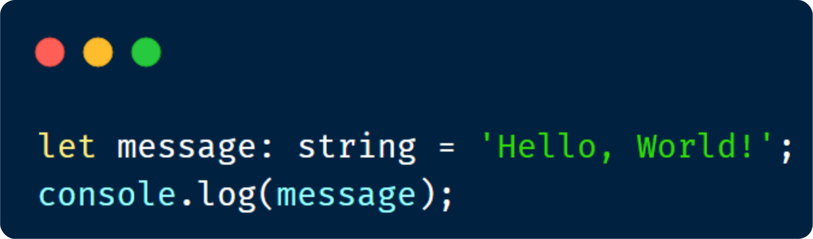

Qué es?
TypeScript es un lenguaje orientado a objetos (como el lenguaje R, por ejemplo). Esto quiere decir que tanto el cliente como el servidor tienen acceso a la escritura de código. Además, se trata de un código abierto. Por otro lado, destaca por ser multiplataforma y, por consiguiente, ser portátil. Es decir, se puede emplear desde cualquier dispositivo, sistema operativo o navegador. Del mismo modo que JavaScript, no requiere de ninguna máquina específica.

En qué se usa
Algunos desarrolladores web dudan al dar el paso a la programación directamente con TypeScript. A continuación, te contamos algunas razones de peso por las que te recomendamos ahondar en el aprendizaje de esta herramienta:
- • Aporta muchísimas herramientas y funciones al desarrollo con JavaScript. Sobre todo, te recomendamos usarlo por la posibilidad de usar tipados, pues te permite determinar interfaces.
- • Así como con JavaScript, podrás usarlo para desarrollar tanto en el backend como en el lado frontal de la web frontend. El motivo de esto es que al final todo se va a traducir o convertir a JavaScript, por lo que no tendremos problemas de interpretación por parte del navegador o de un run de node.js.
Hello World:
